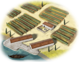
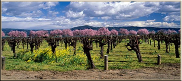

Imperium
Imperium Grape Orchards (Rural) chain
4 levels, each replacing the one before it — you upgrade in place rather than building alongside.
Grape Orchards (Rural) → Vineyard (Rural) → Winery (Rural) → Wine Exports (Rural)
Pictures are the game's own building art. Where a culture ships none of its own, the game falls back to another culture's, and that is what is shown here.
Levels at a glance
| Level | Cost | Build time | Minimum settlement | Upgrades to | Level | Cost | Build time | Minimum settlement | Upgrades to | ||
|---|---|---|---|---|---|---|---|---|---|---|---|
| Grape Orchards (Rural) | 1,200 | 2 | town | Vineyard (Rural) | Vineyard (Rural) | 2,400 | 3 | large town | Winery (Rural) | ||
| Winery (Rural) | 3,600 | 5 | city | Wine Exports (Rural) |  | Wine Exports (Rural) | 12,000 | 8 | large city | — |
Costs in denarii, build time in turns.
Grape Orchards (Rural)

A modest vineyard producing wine that’s (mostly) drinkable, enough to keep the locals happy and the barrels full.
Oh, the labour that must be undertaken for the sake of the vine!
The vines do not grow themselves; no, they demand ceaseless attention, from the springtime stirring of the soil to the mid-summer pruning, all under the vigilant watch of both farmer and sun. And though weary from the endless work, the farmer soldiers on, knowing that every drop of sweat today will lead to a cup of wine tomorrow.
The ground must be lightened, three, four times a year; constantly stirred up with the hoe. The whole vine must be attacked. Meanwhile, the seasons drive forward, forced back once again through their own footsteps.
Now, as the wind gods have shaken the last leaves from the crown of the trees, still the vine-trimmer remains cutting back the new shoots. As he sings his finished rows, still the earth must be beaten, the dust disturbed, and the gods feared for the juicy grapes.
In this modest vineyard, local farmers crush grapes with enthusiasm, sometimes with their feet, sometimes with their imagination.
The wine produced here may not win awards, but at least it won’t make you blind.
| Cost | 1,200 denarii | Build time | 2 turns | Minimum settlement | town |
| Upgrades to | Vineyard (Rural) |
What it does
- +1 farming level
Wine Exports (Rural)

Amphoras of wine are exported in abundance, bringing wealth, and perhaps a few worthy headaches.
Across our lands, the toast rises to the region that keeps the amphoras filled and the hearts light.
This region is now the very heart of wine commerce, supplying fine vintages to distant lands and filling coffers with gold. The locals may complain about their best grapes being shipped off, but can hardly argue when the gold rolling in from amphoras sent abroad speaks for itself. Even the most discerning merchants from far-off lands cannot resist the temptation of this liquid treasure, and word of its quality spreads faster than a drunk in a toga.
The wine may go, but the prosperity stays, and that’s a trade the locals are more than happy to make.
| Cost | 12,000 denarii | Build time | 8 turns | Minimum settlement | large city |
What it does
- +1 farming level
- +3 trade income
- +1 public order (happiness)
Vineyard (Rural)

A well-established vineyard, because life without wine is just barbaric.
The grapes are growing, the barrels are filling, and the local festival just got a lot more interesting, thanks to the gossip flowing as freely as the wine.
With wine production in full swing, this vineyard has become a place of joyful chaos. Farmers sing as they stomp the harvest, and wine flows as easily as tales of ancient heroes and myths. Even the gods would raise a cup here...though perhaps with a little more caution.
And as barrels stack high, local festivals take on a livelier air, spilling into the streets and offering merriment to all brave enough to partake.
The vineyard may be humble, but the wine… it’s almost heroic.
| Cost | 2,400 denarii | Build time | 3 turns | Minimum settlement | large town |
| Upgrades to | Winery (Rural) |
What it does
- +1 farming level
- +1 public order (happiness)
- +1 trade income
Winery (Rural)

The wine industry thrives, bringing cheers, fortune, and a few sleepy heads the next morning.
A bustling city needs its wine, and this winery aims to meet the demand, no matter the hour, nor the hangover.
Once a small orchard, now a full-scale industry, this winery churns out wine by the amphora, bringing joy, prosperity, and perhaps a few questionable decisions. The barrels flow like a river in spring, and citizens drink as if the god of wine himself has taken residence among them.
Merchants sing its praises, nobles toast its flavour, and even the slaves working the presses find a moment of cheer in every sip.
This city’s fame for wine has grown faster than the vines themselves, drawing trade from far and wide.
| Cost | 3,600 denarii | Build time | 5 turns | Minimum settlement | city |
| Upgrades to | Wine Exports (Rural) |
What it does
- +1 farming level
- +2 trade income
- +2 public order (happiness)